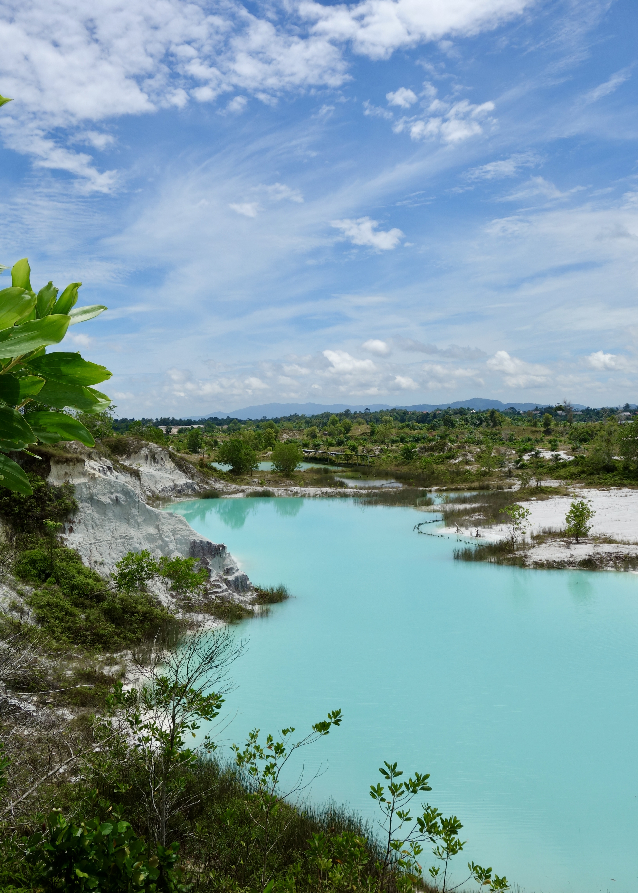
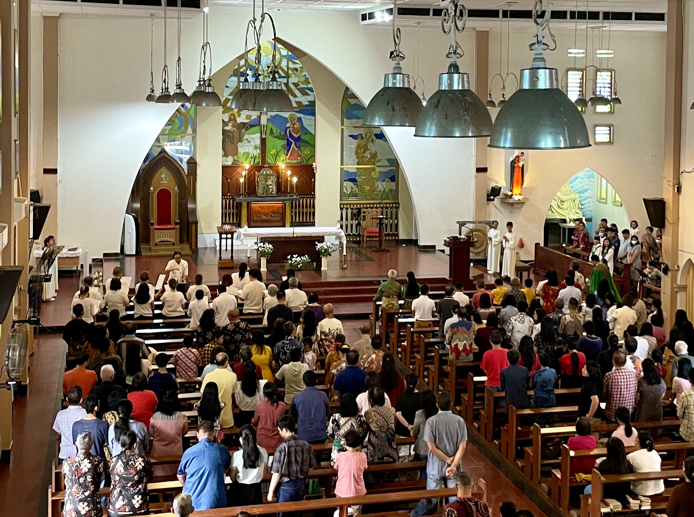
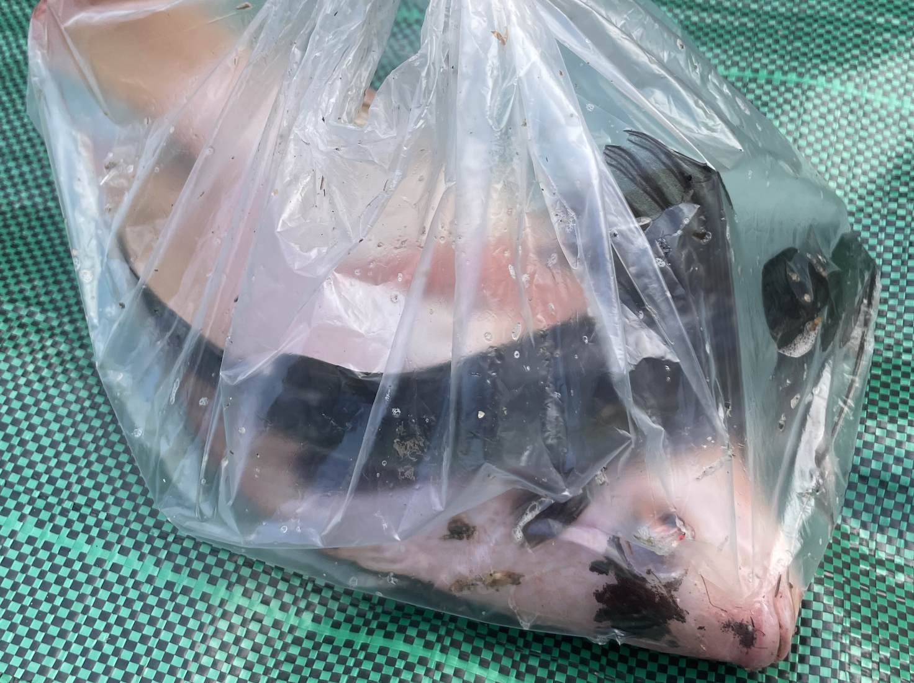
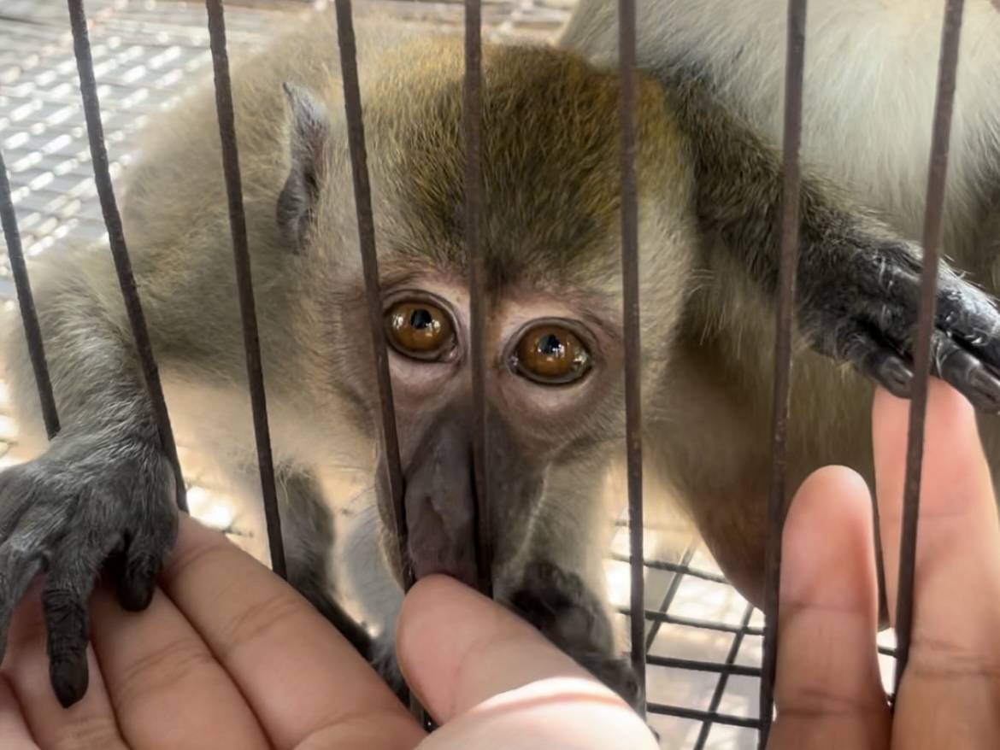
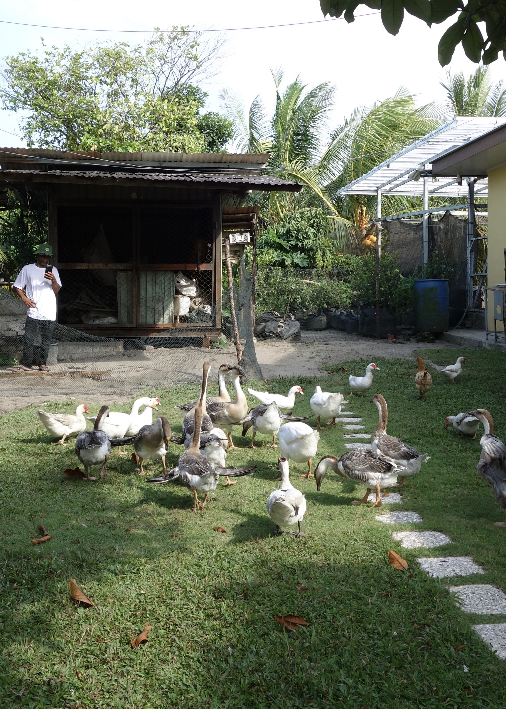

Hari kedua di Bangka dimulai dengan kegiatan ibadah di gereja karena bertepatan dengan hari Minggu. Meskipun suasana pagi masih terasa mengantuk setelah hari sebelumnya yang cukup padat, kegiatan ini tetap memberikan momen ketenangan dan refleksi sebelum memulai aktivitas selanjutnya. Setelah itu, kami melanjutkan perjalanan ke Danau Kaolin yang terkenal dengan warna birunya yang sangat cerah dan unik. Saat tiba di sana, kami langsung terpesona dengan pemandangannya yang terlihat seperti bukan di dunia nyata. Airnya yang berwarna biru terang berpadu dengan tanah putih di sekitarnya menciptakan kontras yang sangat indah. Kami juga mengabadikan momen dengan berfoto bersama di berbagai sudut danau, menikmati suasana yang berbeda dari tempat lain. Selain itu, kami sempat berjalan-jalan di sekitar area danau sambil menikmati keindahan alamnya. Tempat ini menjadi salah satu destinasi yang paling berkesan selama berada di Bangka karena keunikan dan keindahannya.






Setelah dari Danau Kaolin, kami mengunjungi Sky Dragon yang menawarkan berbagai aktivitas menarik dan berbeda dari tempat sebelumnya. Di tempat ini, waktu terasa berjalan sangat cepat karena banyak hal seru yang bisa dilakukan bersama teman-teman. Kami dapat melihat berbagai jenis hewan, belajar tentang cara menanam anggur, hingga mencoba aktivitas memancing ikan secara langsung. Semua kegiatan tersebut memberikan pengalaman baru yang jarang kami temui dalam kehidupan sehari-hari. Selain itu, suasana alam yang masih asri dan udara yang segar membuat kami merasa lebih dekat dengan lingkungan sekitar. Kegiatan di Sky Dragon menjadi salah satu highlight perjalanan karena memberikan kombinasi antara hiburan, pembelajaran, dan kebersamaan. Hari itu benar-benar dipenuhi dengan keseruan dan pengalaman yang tidak terlupakan.